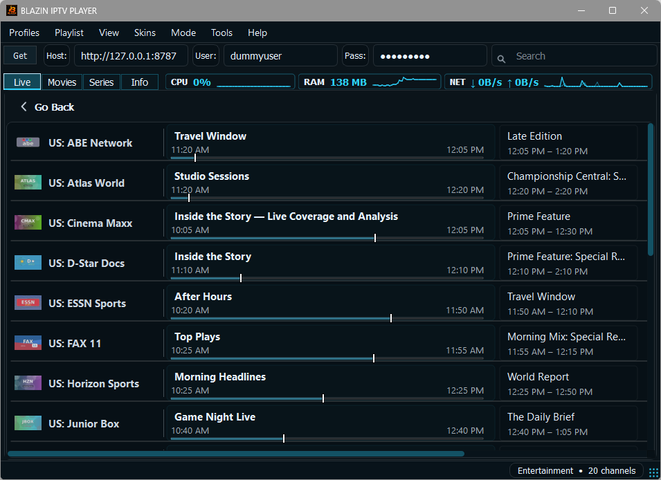

IPTV Player with EPG for Windows
Use a Windows IPTV player with EPG support for user-provided guide data, M3U, Xtream Codes, STB MAC and Stalker Portal sources.

setup type
Why IPTV Player with EPG for Windows matters on Windows
An EPG can make a playlist feel like a guide instead of a raw channel list, but it depends on the data supplied by the user source. Windows users usually want a player that opens quickly, keeps navigation simple, and does not force them to move their setup into a phone-style interface. BLAZIN IPTV Player focuses on a desktop workflow where source setup, categories, favorites, search, guide data, movies, series, and playback settings stay inside one Windows app.
This guide is written for Windows users who are setting up IPTV Player with EPG for Windows. It explains what the app supports, what details you may need from your legal IPTV provider, and how the workflow fits into BLAZIN IPTV Player.
- Windows 11 and Windows 10 desktop layout
- 7-day trial before deciding
- Clear player-only legal boundary
- Internal links to source-specific guides

Supported Workflows
Built for the source formats Windows IPTV users search for
EPG
BLAZIN IPTV Player includes a focused workflow for epg when your legal provider or playlist supports it. The goal is to reduce setup friction and keep browsing fast after the source loads.
XMLTV Where Available
BLAZIN IPTV Player includes a focused workflow for xmltv where available when your legal provider or playlist supports it. The goal is to reduce setup friction and keep browsing fast after the source loads.
Xtream Guide
BLAZIN IPTV Player includes a focused workflow for xtream guide when your legal provider or playlist supports it. The goal is to reduce setup friction and keep browsing fast after the source loads.
M3U Guide
BLAZIN IPTV Player includes a focused workflow for m3u guide when your legal provider or playlist supports it. The goal is to reduce setup friction and keep browsing fast after the source loads.
Live TV Schedule
BLAZIN IPTV Player includes a focused workflow for live tv schedule when your legal provider or playlist supports it. The goal is to reduce setup friction and keep browsing fast after the source loads.
Guide Browsing
BLAZIN IPTV Player includes a focused workflow for guide browsing when your legal provider or playlist supports it. The goal is to reduce setup friction and keep browsing fast after the source loads.
Comparison
What to compare before choosing a Windows IPTV player
| Factor | What to look for | How BLAZIN IPTV Player addresses it |
|---|---|---|
| Trial period | Enough time to test your real playlist, provider account, guide data, and playback behavior. | 7-day free trial through Microsoft Store. |
| Source compatibility | Support for the source type you already have instead of forcing conversion. | M3U, M3U Plus, Xtream Codes, STB MAC, and Stalker Portal workflows. |
| Desktop usability | Small, practical Windows interface with search, favorites, categories, and clear settings. | Windows-first layout designed for PCs, laptops, and smaller screens. |
| Legal clarity | The app should not claim to provide channels or subscriptions. | Player-only software for user-provided legal sources. |
| Search visibility | Focused content pages for each major connection type. | WindowsIPTV.com includes dedicated pages for M3U, Xtream, STB MAC, Stalker, EPG, alternatives, and setup guides. |
Practical Setup
How to test this during the 7-day free trial
- Install BLAZIN IPTV Player from the Microsoft Store using the trial option.
- Add your own legal playlist, Xtream Codes login, STB MAC profile, or Stalker Portal details.
- Check whether categories, Live TV, Movies, Series, and EPG data appear the way your source provides them.
- Test internal VLC-based playback and any external player settings you normally use.
- Use search, favorites, themes, and guide browsing for a few days before deciding.
FAQ
Frequently Asked Questions
Does BLAZIN IPTV Player include channels?
No. It is player-only software. You provide your own legal playlist, Xtream Codes account, STB MAC details, or Stalker Portal information.
Does the app have a free trial?
Yes. BLAZIN IPTV Player offers a 7-day free trial through the Microsoft Store so you can test the Windows IPTV workflow before deciding.
Which source types are supported?
The app is designed for M3U, M3U Plus, Xtream Codes, STB MAC, and Stalker Portal sources, depending on what your legal provider supports.
Does it support EPG guide data?
Yes. EPG support is included where the provider or playlist supplies compatible program guide data.
Who is this iptv player with epg for windows page for?
This page is for Windows users comparing iptv player with epg for windows options and trying to decide whether BLAZIN IPTV Player fits their legal playlist or portal workflow.
Can I test iptv player with epg for windows before paying?
Yes. BLAZIN IPTV Player offers a 7-day free trial through the Microsoft Store so you can test your own legal source first.
Related Windows IPTV Guides
Continue Comparing Setup Options
Windows IPTV Player
Open the focused guide for windows iptv player and review setup options for Windows users.
Best IPTV Player for Windows 11
Open the focused guide for best iptv player for windows 11 and review setup options for Windows users.
M3U Player for Windows
Open the focused guide for m3u player for windows and review setup options for Windows users.
M3U Plus Player
Open the focused guide for m3u plus player and review setup options for Windows users.
Xtream Codes Player
Open the focused guide for xtream codes player and review setup options for Windows users.
STB MAC Player
Open the focused guide for stb mac player and review setup options for Windows users.
Stalker Portal Player
Open the focused guide for stalker portal player and review setup options for Windows users.
IPTV Player Zero Alternative
Open the focused guide for iptv player zero alternative and review setup options for Windows users.
IPTV Smarters Alternative
Open the focused guide for iptv smarters alternative and review setup options for Windows users.
TiviMate Alternative
Open the focused guide for tivimate alternative and review setup options for Windows users.
VLC IPTV Player
Open the focused guide for vlc iptv player and review setup options for Windows users.
EPG implementation
Guide data where your source provides it
BLAZIN IPTV Player can show EPG information from compatible provider data. The app includes EPG loading, channel matching and guide tooltip display, while availability depends on your own legal playlist or IPTV provider metadata.
- EPG support for compatible M3U/XMLTV-style and provider data.
- Xtream EPG loading where the API supplies guide metadata.
- Program details and channel schedule context in the Windows interface.
7-Day Free Trial
Try This Windows IPTV Player Free for 7 Days
Install from the Microsoft Store, add your own legal playlist or portal details, and test the Windows IPTV workflow before deciding whether it fits your setup.
BLAZIN IPTV Player is player-only software. It does not provide channels, playlists, streams, provider accounts, or copyrighted content.